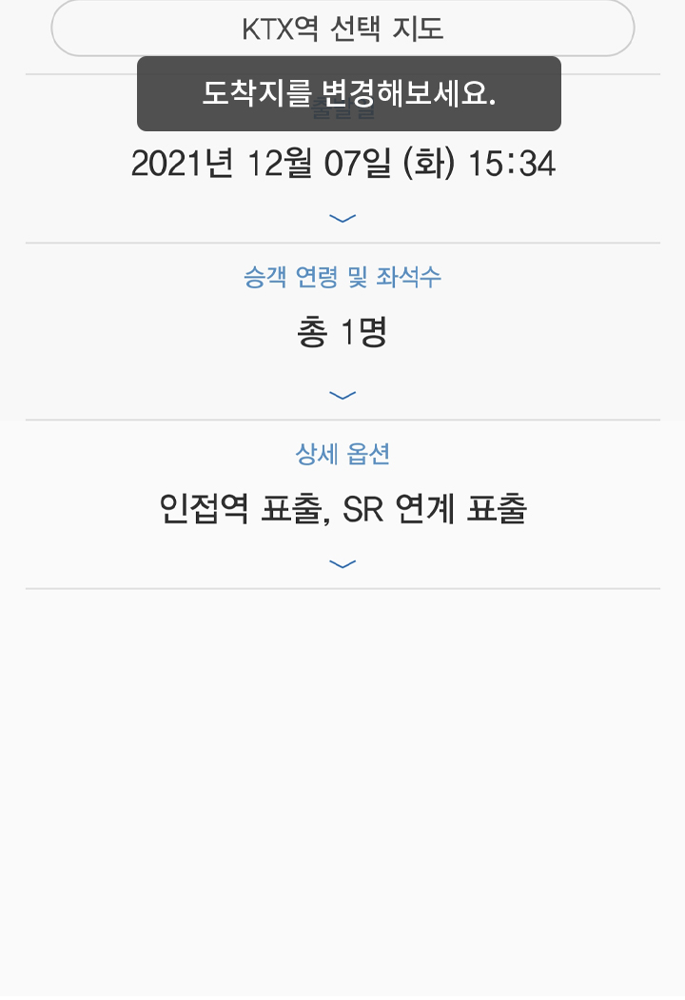
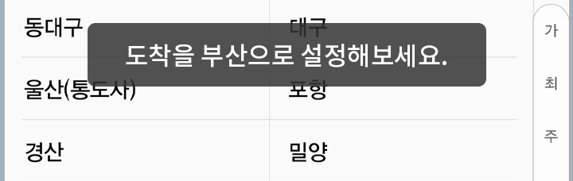
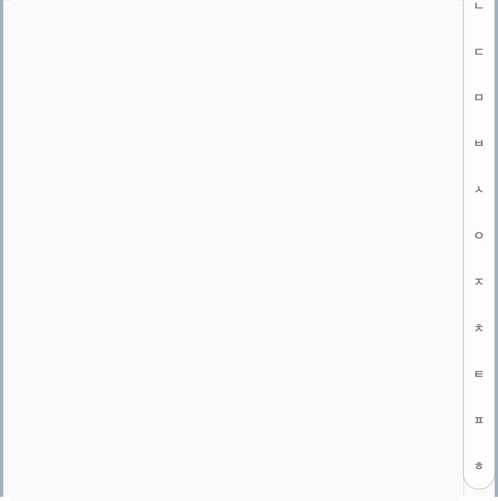

<ion-content>
  <div class="container">
    
    
    
    <!-- <div class="img_cover">
      
      <div class="text_cover korail_input korail_input2">
        <ion-icon name="search-outline"></ion-icon>
        <ion-input placeholder="역 명의 초성 또는 전체를 입력해주세요."></ion-input>
      </div>
    </div>
    
    <div class="img_cover">
      
    </div> -->
    <div class="fix_button">
      
    </div>
  </div>
</ion-content>